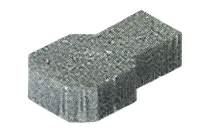

Pavers
cobblestone
Uni-Lock

Quadra Paver
I-Section
Square Tiles
City
Available Thickness:
50mm | 60mm | 80mm
Available Colors:
Grey, Red, Black, Yellow, Brown, White, Green, Orange and Blue
Features
• High loading bearing capacity
Our pavers are engineered to withstand significant weight and pressure, making them ideal for
areas with heavy vehicle or foot traffic. With a high load-bearing capacity, they provide a
stable and durable surface for driveways, industrial sites, and public walkways. These pavers
are designed to maintain their structural integrity under substantial loads, ensuring
long-lasting performance even in the most demanding environments.
• Long lasting and reusable
Built to last, our pavers are crafted from high-quality materials that ensure longevity and
durability. They are designed to withstand the test of time, providing a reliable surface for
years to come. Additionally, our pavers are reusable; they can be lifted and reinstalled
elsewhere without losing their original strength and appearance. This makes them an economical
and sustainable choice for various landscaping and construction projects.
• Maintainance free
Say goodbye to frequent repairs and upkeep with our maintenance-free pavers. These pavers are
designed to resist cracking, chipping, and other common forms of wear and tear. Their robust
construction and durable materials mean that they require little to no maintenance, saving you
time and money. Enjoy a pristine, low-maintenance surface that retains its beauty and
functionality with minimal effort.
• Exceptional weather resistance
Our pavers offer exceptional resistance to a wide range of weather conditions. Whether it's
scorching summer heat, freezing winter temperatures, or heavy rainfall, these pavers stand
strong. They are designed to resist fading, warping, and deterioration caused by weather
exposure, ensuring that they maintain their appearance and performance throughout the seasons.
Perfect for outdoor applications, our weather-resistant pavers are built to endure.
• Environment Friendly
Committed to sustainability, our pavers are an eco-friendly choice for your paving needs. Made
from recycled materials and designed for longevity, they reduce the need for frequent
replacements, thereby minimizing waste. Additionally, their permeable design allows for natural
water drainage, reducing runoff and promoting groundwater recharge. Choose our environmentally
friendly pavers for a green and sustainable paving solution that benefits both your project and
the planet.